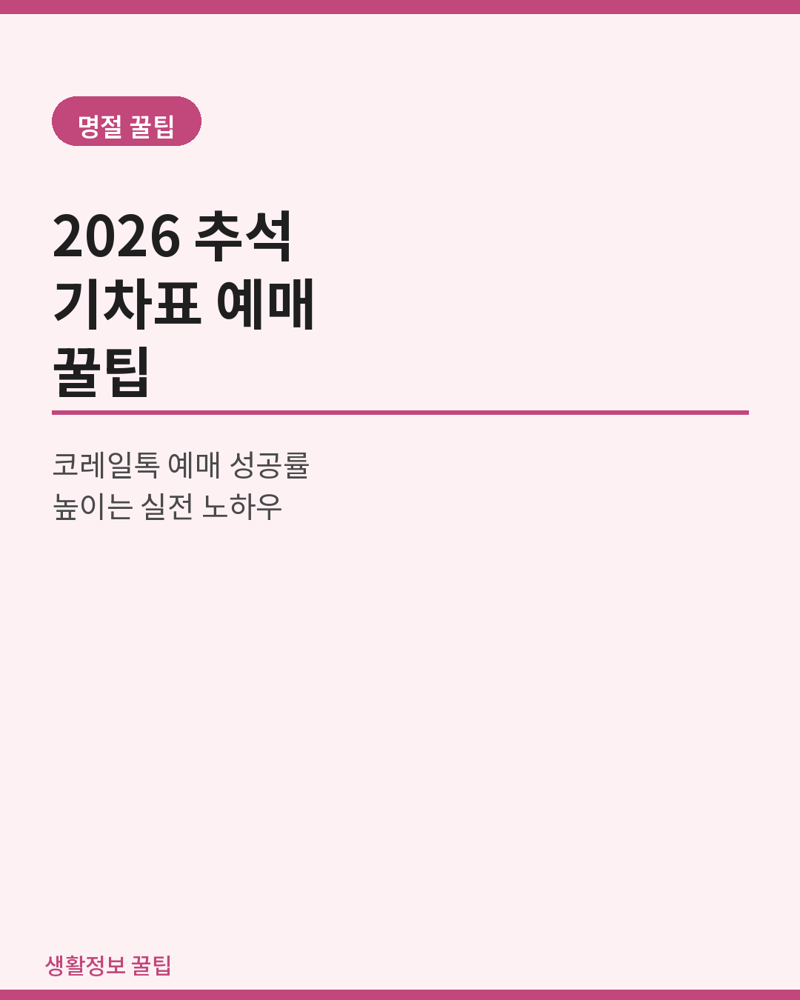
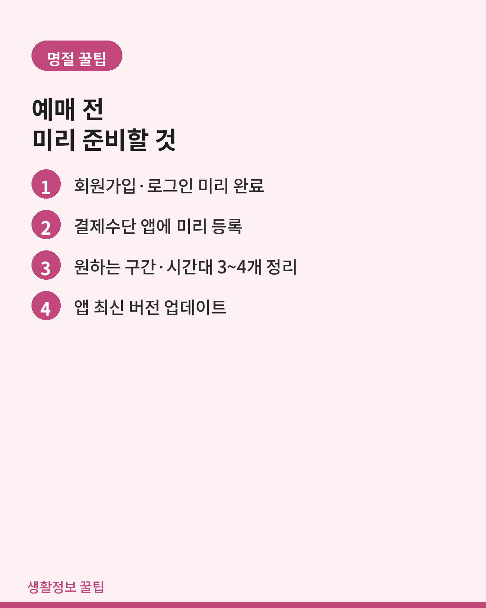
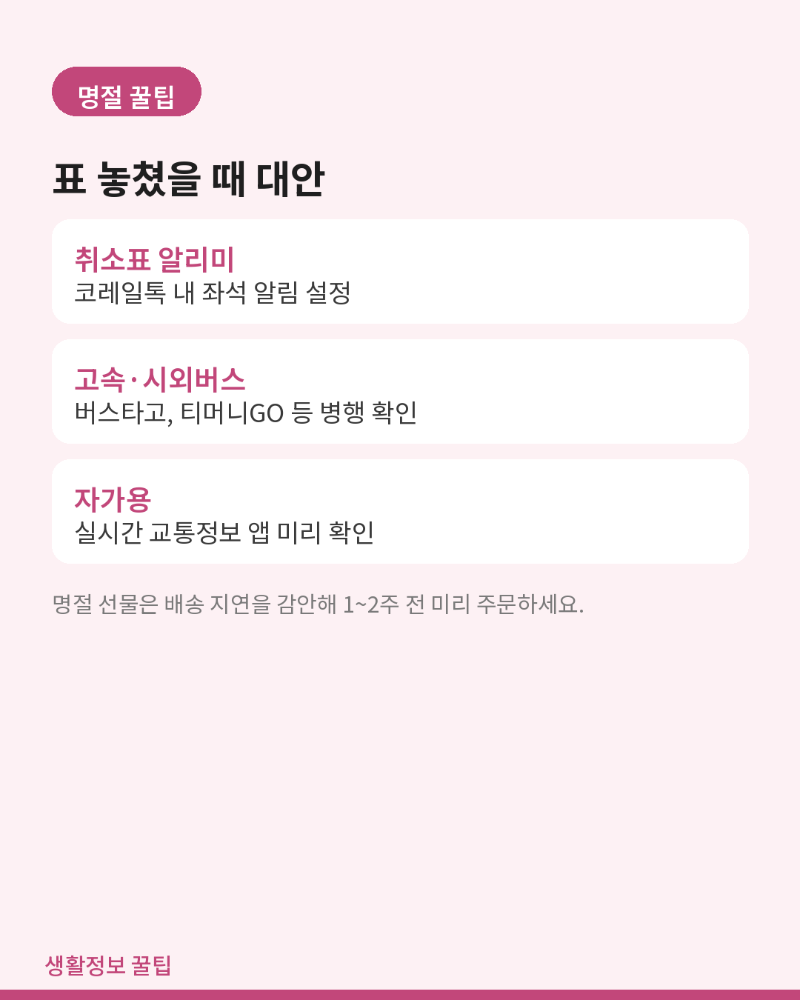
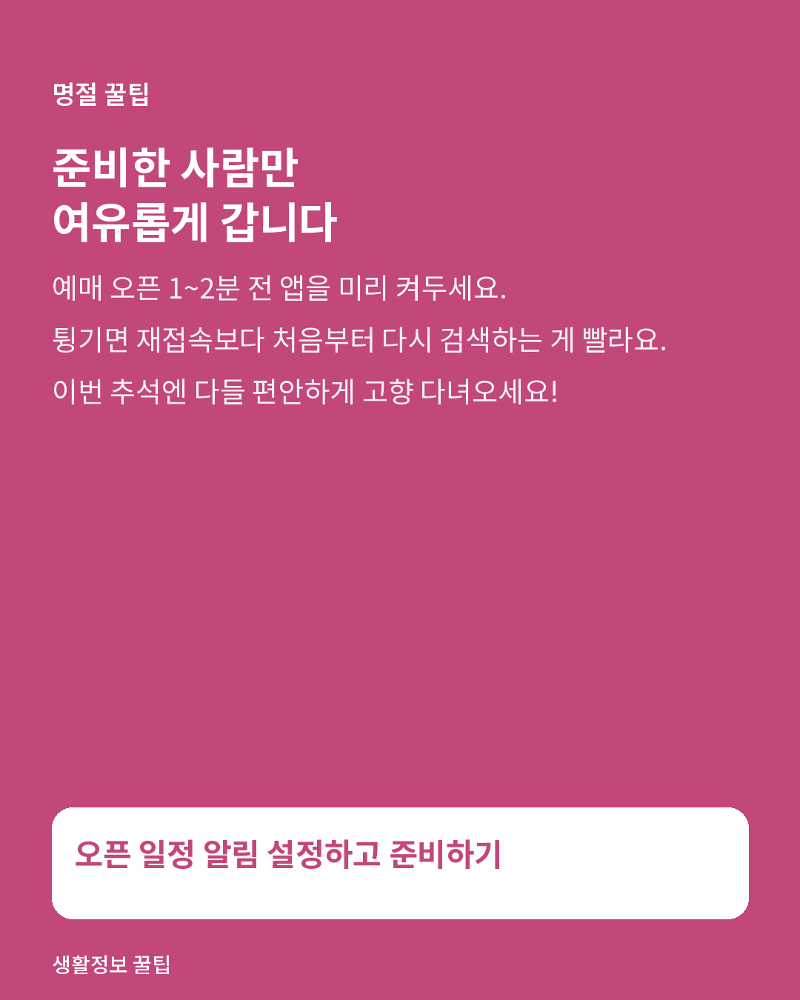

명절
2026 추석 기차표 예매 꿀팁 — 코레일톡 오픈 전 미리 준비하기
예매 성공률을 높이는 사전 준비와, 실패했을 때 쓸 수 있는 대안.

명절 기차표는 예매 시작 몇 분 안에 인기 시간대가 매진되는 게 매년 반복되는 일입니다. 예매 성공률을 높이는 실전 팁과, 표를 못 구했을 때 쓸 수 있는 대안까지 정리했습니다.
1. 오픈 일정부터 확인
- 코레일(KTX) 추석 승차권은 보통 명절 3~4주 전에 상행·하행을 나눠 이틀에 걸쳐 오픈합니다.
- SRT는 코레일과 별도 일정으로 오픈되니 두 채널 일정을 각각 확인해야 합니다.
- 정확한 오픈 일시는 코레일톡·SRT 앱 공지사항에 미리 예고되니 알림을 설정해두세요.

2. 예매 성공률을 높이는 사전 준비
- 회원가입·로그인 미리 완료 — 예매 당일 로그인부터 하면 이미 늦습니다.
- 결제수단 미리 등록 — 카드 정보를 앱에 저장해 결제 단계를 최소화합니다.
- 구간·시간대 후보 3~4개 정리 — 1지망이 매진되면 바로 2지망으로 넘어갈 수 있게.
- 공공 와이파이보다 LTE/5G — 순간 접속자 폭주로 느려질 수 있습니다.
- 앱 최신 버전 업데이트 — 오픈 전날 미리 해두세요.
3. 예매 당일 실전
- 오픈 1~2분 전부터 앱을 켜두고 새로고침을 준비합니다.
- 앱이 튕기면 재접속보다 처음부터 다시 검색하는 게 더 빠른 경우가 많습니다.
- 입석·자유석도 함께 열립니다. 좌석이 매진이면 입석으로 먼저 확보한 뒤 취소표를 재조회하는 방법도 있습니다.
- 취소표는 출발 직전까지도 계속 나옵니다. 놓쳤다면 좌석 알리미를 걸어두세요.

4. 표를 못 구했다면
- 코레일톡 안의 취소표 알리미 기능을 활용합니다.
- 명절 임시열차 편성 여부를 코레일 공지사항에서 확인합니다.
- 고속버스·시외버스 예매(버스타고, 티머니GO 등)를 병행해 확인합니다.
- 자가용이라면 고속도로 실시간 소통 정보 앱을 미리 확인해두세요.
- 카풀·동승 커뮤니티도 하나의 대안입니다.
5. 선물은 더 일찍
기차표만큼 자주 놓치는 게 선물 준비입니다. 명절 2주 전부터는 택배 물량이 폭주해 배송이 지연되니, 어른들 선물은 최소 1~2주 전에 주문해두는 걸 추천합니다.

마무리
명절 기차표 예매는 준비한 사람과 안 한 사람의 차이가 확실히 갈립니다. 오픈 일정 알림부터 결제수단 등록까지 순서대로 준비해두면 훨씬 여유롭게 예매할 수 있습니다.
함께 쓰면 좋은 것
이 글의 일부 링크는 쿠팡 파트너스 활동의 일환으로, 이를 통해 발생한 수익의 일정액을 제공받을 수 있습니다.
- 대용량 보조배터리예매 대기 중 배터리 걱정 없게 미리 충전해서 챙기세요.
- 목베개 · 여행쿠션장거리 이동이라면 목베개 하나로 훨씬 편하게 갈 수 있습니다.
- 추석 선물세트배송이 지연되기 전에 미리 주문해두면 마음이 편합니다.
- 차량용 핸드폰 거치대자차로 이동한다면 내비게이션용 거치대도 챙겨보세요.